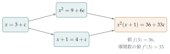

STEP II 1992、第4問
先に進む前に問題を読んでおこう。問題は STEP Support Programme の問題データベースにある： step.maths.org/questions/92-s2-q4
導入
微分（differentiation）とは何か。学校では極限（limit）\(\lim_{h \to 0}\frac{f(x+h) - f(x)}{h}\) によって定義され、そのあとで規則を学ぶ。和の導関数（derivative）は導関数の和であること、積の法則（product rule）などである。この問題はその順序をひっくり返す。極限のことは完全に忘れよう。ある演算について知っているのは、それが和の法則、積の法則、定数に関する規則に従い、\(x\) を \(1\) に写すということだけだとする。すると、少なくとも多項式（polynomial）の上では、それは微分でなければならないことを、この問題は示している。
これは微積分に対する代数学者の見方である。すなわち、演算は公式によってではなく、それが従う規則によって特徴づけられる。積の法則に従う演算は導分（derivation）とよばれ、代数学、幾何学、物理学のいたるところに現れる。意外なことに、同じ考え方が現代の機械学習（machine learning）システムを訓練するソフトウェアの内部でも働いている。
取りかかる前に
規則 (i) は積の法則である。積の法則から、定数について何がわかるだろうか。（定数を積とみなしてみよう。）
数 \(1\) は \(1 \times 1\) に等しい。\(1 \times 1\) に積の法則を適用すると \(\lozenge 1\) がそれ自身と関係づけられ、そこからそれが \(0\) でなければならないことが導かれる。一般に、このような公理（axiom）を扱うときのこつは、巧みに選んだ単純な入力に公理を適用することである。
順を追って解く
段階 1 定数
\(\mathrm{f} = \mathrm{g} = 1\) として規則 (i) を適用せよ。次に、ほかの定数に対しては規則 (iv) を用いよ。
\(\lozenge 1 = \lozenge(1 \cdot 1) = 1 \cdot \lozenge 1 + 1 \cdot \lozenge 1 = 2\lozenge 1\) であるから、\(\lozenge 1 = 0\) である。任意の定数（constant）\(\lambda\) に対して、規則 (iv) より \(\lozenge\lambda = \lozenge(\lambda \cdot 1) = \lambda\lozenge 1 = 0\) である。■
段階 2 累乗
規則 (iii) を用いると \(\lozenge x^2 = \lozenge(x \cdot x) = x\lozenge x + x\lozenge x = 2x\) である。さらに \[\lozenge x^3 = \lozenge(x^2 \cdot x) = x\lozenge x^2 + x^2\lozenge x = x \cdot 2x + x^2 = 3x^2.\]
すべての正の整数 \(n\) について \(\lozenge x^n = nx^{n-1}\) であることを、数学的帰納法（induction）によって証明せよ。
\(n = 1\) の場合は規則 (iii) そのものである。\(\lozenge x^n = nx^{n-1}\) ならば \[\lozenge x^{n+1} = \lozenge(x^n \cdot x) = x\lozenge x^n + x^n\lozenge x = x \cdot nx^{n-1} + x^n = (n + 1)x^n. \qed\]
段階 3 すべての多項式
一般の多項式は \(\mathrm{h}(x) = a_0 + a_1x + \cdots + a_mx^m\) である。規則 (ii)（を繰り返し適用したもの）と規則 (iv) により \[\begin{aligned} \lozenge\mathrm{h}(x) &= \lozenge a_0 + a_1\lozenge x + a_2\lozenge x^2 + \cdots + a_m\lozenge x^m \\ &= a_1 + 2a_2x + \cdots + ma_mx^{m-1} = \mathrm{h}'(x). \qed \end{aligned}\]
振り返り
公理が演算を決定する。極限に一切触れない4つの規則が、多項式上の \(\lozenge\) を完全に決定した。
生成元（generators）。すべての多項式は、定数と \(x\) から加法と乗法を用いて組み立てられる。構成要素に対して \(\lozenge\) が何をするか、そしてそれが組み立てのための演算とどう関わるかがわかれば、それはいたるところで決まる。
構成に沿った帰納法。証明は多項式の組み立て方をなぞっていた。まず乗法の繰り返しによって累乗を扱い、次に和を扱ったのである。
背後にある数学
ある代数系の上の演算 \(D\) が加法的であり、積の法則 \(D(fg) = fD(g) + gD(f)\) を満たすとき、それを導分という。この問題が示すのは、多項式の上では、定数を \(0\) に写す導分は \(D(x)\) によって完全に決定されるということである。実際 \(D(h) = h'(x)\,D(x)\) であり、自由に選べるのは多項式 \(D(x)\) だけである。規則 (iii) は \(D(x) = 1\) と定めている。導分は数学のさまざまな場面に現れる。幾何学では、曲面上のベクトル場（vector field）を、その曲面上の関数に対する導分として定義できる（ベクトル場の方向に関数を微分するのである）。代数学では、ある構造の導分はその「無限小の対称性」を測る。物理学では、量子力学の交換子（commutator）\([A, B] = AB - BA\) が各引数について導分になっている。
極限を使わない微積分
代数的な導関数は、極限がまったく意味をもたない状況でも機能する。素数 \(p\) を法とする算術のような有限体（finite field）の上には極限は存在しないが、多項式の形式的導関数（formal derivative）は同じ規則によって定義され、それでもなお重根（repeated root）を検出できる。多項式 \(f\) が重根をもつのは、\(f\) と \(f'\) が共通因数をもつときであり、かつそのときに限る。たとえば、\(p \nmid n\) のとき \(x^n - 1\) が重根をもたないことはこのようにして示される。これは、第 6.1 節 の円分多項式（cyclotomic polynomial）を有限体上で定義するのに必要な事実である。同じ考え方は符号理論（coding theory）や暗号理論（cryptography）でも用いられている。
自動微分
ここで現代的な応用を紹介しよう。\(\varepsilon^2 = 0\) だが \(\varepsilon \neq 0\) であるような数 \(\varepsilon\) を考え出し、二重数（dual numbers）\(a + b\varepsilon\) で計算を行う。すると \((a + b\varepsilon)(c + d\varepsilon) = ac + (ad + bc)\varepsilon\) となり、\(\varepsilon\) の部分はまさに積の法則に従う。したがって、任意の多項式について \[f(x + \varepsilon) = f(x) + f'(x)\,\varepsilon,\] が成り立ち、二重数 \(x + \varepsilon\) において \(f\) を評価すると、値と導関数の値が同時に、しかも正確に計算される。極限は不要であり、小さな差をとることによる丸め誤差も生じない（図 6.5.1）。これをフォワードモード自動微分（forward-mode automatic differentiation）という。その親戚であるリバースモードは、数十億のパラメータをもつニューラルネットワーク（neural networks）を訓練するのに使われるアルゴリズム（誤差逆伝播法（backpropagation））である。このようなシステムが学習するたびに、積の法則と連鎖律（chain rule）を導分として一歩ずつ適用しているのである。

思考のスキル
演算をそれが従う規則によって記述し、その規則が演算をただ一つに決定することを示す。
これは公理的方法（axiomatic method）であり、大学の代数学の中心にある。その強みは、公理から証明したことが、それを満たすあらゆる演算に当てはまる点にある。多項式の微分であれ、曲面上の関数の微分であれ、まだ発明されていない何かであれ、である。
次の一歩
別の導分。\(\lozenge\) が規則 (i)、(ii)、(iv) を満たすが、\(1\) の代わりに \(\lozenge x = x\) であるとする。\(\lozenge\mathrm{h}(x) = x\,\mathrm{h}'(x)\) を示せ。\(\lozenge\) は \(x^n\) をどう写すか。
商の法則。規則 (i) が引き続き成り立つと仮定して、\(\lozenge\) を有理関数（rational functions）\(\mathrm{f}/\mathrm{g}\) に拡張する。\(\mathrm{g} \cdot \frac{\mathrm{f}}{\mathrm{g}} = \mathrm{f}\) に規則 (i) を適用して、商の法則（quotient rule）を導け。
重根。\((x - a)^2\) が多項式 \(\mathrm{f}\) を割り切るならば、\(x - a\) は \(\mathrm{f}'\) を割り切ることを示せ。これを用いて、\(x^n - 1\) が重根をもたないことを示せ。
二重数。二重数を用いて、\(f(x) = (x^2 + 1)^3\) に対する \(f(2)\) と \(f'(2)\) を計算し、連鎖律で検算せよ。
さらに学ぶために
Peter Cameron, Introduction to Algebra（Oxford University Press）。大学1年次の水準で環（rings）、多項式、体（fields）を扱い、形式的導関数も取り上げている。
Andreas Griewank & Andrea Walther, Evaluating Derivatives（SIAM）。自動微分に関する標準的な文献。上級者向け。
Michael Nielsen, Neural Networks and Deep Learning（オンラインで無料公開）。第 2 章で誤差逆伝播法がわかりやすく解説されている。